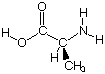
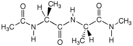

Optimization in Different Coordinate Systems
- Comparative Examples
A first example chosen here for the sake of comparison is that of neutral
alanine. A complete input file for optimization of this system at the HF/6-31G(d)
level of theory can be found here. The total electronic
energy of the system at its starting point is -321.8330969au. The following table
summarizes the results obtained in geometry optimizations using the the three
different coordinate systems:
| coordinates | opt.
cycles | final energy
(Hartree) | CPU-time
(sec.) | CPU-time
(per step) |
|---|
| internal | 18 | -321.8647897 | 840 | 47 |
| cartesian | 57 | -321.8647910 | 2627 | 46 |
| redundant | 18 | -321.8647911 | 833 | 46 |
| |
 |
One can see that the geometry optimization proceeds equally well in Z-Matrix and in
redundant internal coordinates in this case. Optimization in cartesian coordinates
is, in contrast, much less efficient.
This is reflected in both the number of optimization cycles as well as the total
CPU time needed for the geometry optimization (performed here on Xeon/2.6GHz Linux PCs).
The CPU time needed for each of the optimization cycles is, however, almost identical
for all three options. The HF/6-31G(d) optimized structure can be viewed by clicking
on the alanine molecule.
A second, slightly larger, model system has been chosen with the end-capped alanyl alanine
(see structure below). The N-terminal end is here capped with the acetyl group, the C-terminal
end with an N-methyl amide. For quantum mechanical methods this dipeptide, containing 32 atoms
and 90 independent structural degrees of freedom, might already be considered a medium sized to
large molecule. A complete input file for optimization of this system at the HF/6-31G(d)
level of theory can be found here. Optimization of this systems has
been performed again using the HF/6-31G(d) method from the same starting structure with total
energy of -738.6310951 Hartree in all three coordinate systems available in Gaussian.
The following results have been obtained:
| coordinates | opt.
cycles | final energy
(Hartree) | CPU-time
(sec.) | CPU-time
(per step) |
|---|
| internal | 43 | -738.7149776 | 19313 | 449 |
| cartesian | >318 | (-738.7149762) | >144353 | 454 |
| redundant | 40 | -738.7149777 | 17141 | 429 |
| |
 |
For this very flexible system the optimization in redundant internals slightly outruns the optimization
in Z-Matrix coordinates, while the optimization in cartesian coordinates is incomplete even after
318 optimization cycles. Optimization in redundant internals is particularly effective in the endgame
and uses less SCF cycles per geometry optimization step in this last part of the optimization . On
average this leads to slightly lower CPU times per cycle than for optimizations in Z-Matrix coordinates.
This result is typical for large, unsymmetric structures. A different relative performance can be expected
for smaller or highly symmetric systems.
last changes: 28.10.2004, HZ
questions & comments to: zipse@cup.uni-muenchen.de